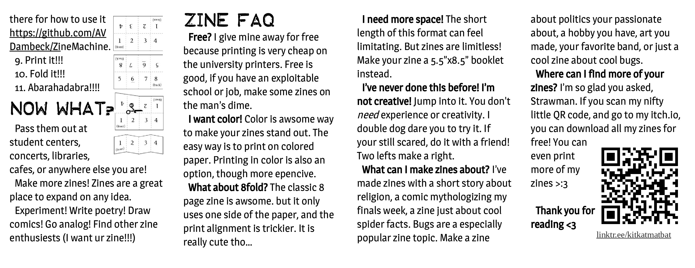

<!DOCTYPE html>
<!--this is rather a hacky way to do this. the better way would be to use a sepereate css class that would on two printer pages arange the zine pages 12341234 56785678. For now i just put the pages in the correct wrong order and print fronts and backs to seperate files and join those before printing that.-->
<!-- TODO: Update the language if you're not writing in English! Hey, maybe remix this project and translate the instructions for other people? -->
<html lang="en">
<!-- TODO: Add a title for your zine -->
<title>4 panel front</title>
<meta charset="utf-8" />
<meta http-equiv="X-UA-Compatible" content="IE=edge" />
<meta name="viewport" content="width=device-width, initial-scale=1" />
<!-- TODO: Update the icon image if you want to get fancy! -->
<link rel="icon" type="image/png" href="https://cdn.glitch.com/c10b2617-5888-415b-b574-42e2ab8f3484%2Fzine-machine-32.png" />
<link rel="stylesheet" href="../style.css" />

<!-- TODO: Add a description for your zine -->
<meta name="Description" content="[Add your zine description]" />
<!-- TODO: Update the theme color to match if you change the styles -->
<meta name="theme-color" content="#741b47" />

<main class="zine">
    <header class="zine-page page-1">
      
    </header>
    <section class="zine-page page-2">
      
    </section>
</main>

<!-- I know it says you need a closing </html> tag, but you actually don't! Feel free to add one though if it seems cleaner -->
